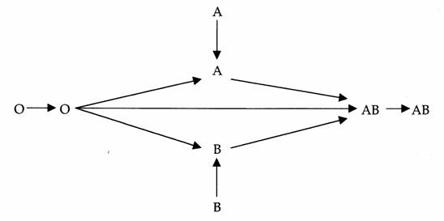
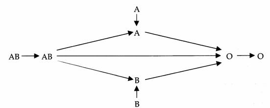

Bienvenue Sur Medical Education
Les groupes sanguins
Immuno-hematologie
L'antigene (Ag)
L'antigene substance biologique (proteine, glucide) capable de provoquer une reaction immunitaire et de reagir specifiquement avec le produit de cette reaction (anticorps).
L'anticorps (Ac)
L'anticorps est une immunoglobuline (Ig) dont la production est provoquee par l’administration d’un antigene et capable de se lier specifiquement a lui.
- Anticorps immuns : immunisation par grossesse ou transfusion.
- Anticorps naturels : presence systematique sans immunisation :
- Anticorps reguliers : presents chez tous les individus n’ayant pas l’antigene.
- Anticorps irreguliers : presents chez certains individus n’ayant pas l’antigene.
- Hemolyse (in-vivo) : destruction par lyse membranaire des globules rouges. En transfusion, c’est la consequence d’une incompatibilite immunologique oe des anticorps se fixent sur des antigenes correspondants de groupe sanguin.
- Agglutination (in-vitro) : formation d’amas due a la fixation des anticorps sur les antigenes correspondants de groupe sanguin.
- Antigene A + Anticorps anti-A = agglutination
- Antigene A + Anticorps anti-B = pas d’agglutination
Le systeme ABO
Le systeme ABO est definie par la presence d’antigenes (A, B) a la surface des globules rouges et la presence d’anticorps reguliers dans le plasma.
Les anticorps du systeme ABO sont constamment presents :
- Un sujet de groupe A a l’antigene A et des anticorps anti-B.
- Un sujet de groupe B a l’antigene B et des anticorps anti-A.
- Un sujet de groupe O n’a pas d’antigene et a des anticorps anti-A et anti-B.
- Un sujet de groupe AB a l’antigene A et l’antigene B et n’a pas d’anticorps.
L’epreuve de Beth-Vncent permet l’identification des antigenes globulaires en mettant en contact les globules rouges a tester et les anticorps connus (anti-A, anti-B, anti-A+B).
| Epreuve de Beth-vincent | |||
| Anti-A | Anti-B | Anti A+B | |
| A | + | - | + |
| B | - | + | + |
| O | - | - | - |
| AB | + | + | + |
(+) = presence d’agglutination
Epreuve de Simonin
L’epreuve de Simonin permet l’identification des anticorps plasmatiques en mettant en contact le plasma du sang a tester et les antigenes sanguins connus (A, B).
| Epreuve de Simonin | ||
| A | B | |
| A | - | + |
| B | + | - |
| O | + | + |
| AB | - | - |
(+) = presence d’agglutination
Regle de compatibilite ABO
Transfusion sanguine

Transfusion de plasma

Le systeme Rh
Le systeme Rh se definit par 5 antigenes principaux :
- D ou Rh1
- C ou Rh2
- E ou Rh3
- c ou Rh4
- e ou Rh
Les personnes possedant l’antigene D sont Rhesus positif et sont dits Rh1 ou RhD.
La presence ou l’absence des antigene C, E, c, e, est analysee dans le cadre du phenotype Rh-KEL1 qui comporte en outre la recherche de l’antigene K du systeme KELL.
Un Concentre de Globules Rouges (CGR) est dit qualifie antigeno-compatible RH-KEL1 lorsqu’il est compatible pour les antigenes Rh1, Rh2, Rh3, Rh4, Rh5 et KEL1.
Les systemes KELL, DUFFY, KIDD
Dans les systemes Kell (Ag K1 et K2), Duffy (Ag Fya et Fyb), Kidd (Ag Jka et Jkb), les anticorps sont irreguliers et immuns, c'est e dire :
- Ils ne sont presents que chez certains individus qui n’ont pas l’antigene (irreguliers).
- Ils resultent d’une immunisation par grossesse ou par transfusion incompatible (immuns).
Le sujet s’immunise alors contre un antigene qu’il ne possede pas.
- Ces anticorps sont detectes par la Recherche d’Agglutines Irregulieres (RAI).
La RAI est la recherche d’anticorps irregulier, qui consiste e rechercher dans le plasma du patient, des anticorps, diriges contre un panel de globules rouges tests, representatifs des principaux antigenes connus.
Si la RAI se revele positive, la transfusion se fera par du :
- Sang phenotype : ne contenant pas les antigenes du receveur.
- Sang crosse : test de compatibilite qui consiste en la mise en contact directe du plasma du patient avec les globules rouges de la poche a transfuser.
La RAI a une validite de 72 heures. Depasser ce delai, il faut realiser un nouveau prelevement.
Voir aussi :